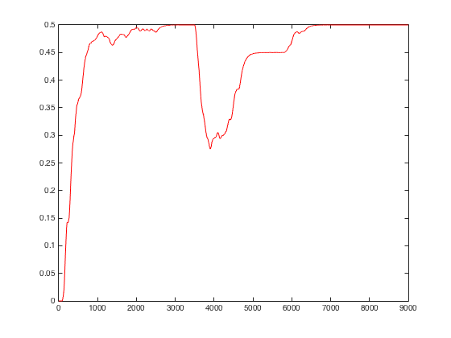

The models for the paper:
Hawkins J, Ahmad S (2016) Why Neurons Have Thousands of Synapses, a
Theory of Sequence Memory in Neocortex. Front Neural Circuits 10:23
are available here:
https://github.com/numenta/nupic
Notes provided by author Subutai Ahmad who also contributed to the
ModelDB notes below:
The simulations in the paper (specifically Figure 6) can be recreated
using the code here:
https://github.com/numenta/nupic.research/tree/master/projects/sequence_learning
In order to run it, the user would need to install our research
repository:
https://github.com/numenta/nupic.research
Which in turn depends on NuPIC:
https://github.com/numenta/nupic
We also have an active online forum for questions on the paper or the model:
https://discourse.numenta.org/c/htm-theory
---
Note from the ModeDB administrator:
I successfully installed the code on the unbuntu 14.04 platform.
In its default state it reproduced the red trace from Figure 6.
Since I was starting with a new ubuntu install, I installed the
following packages:
sudo apt-get install libfreetype6-dev libpng12-0 libpng12-dev libpng++-dev git python-setuptools python-devel python-numpy python-scipy build-essential gfortran autoconf automake libx11-dev
pip install https://s3-us-west-2.amazonaws.com/artifacts.numenta.org/numenta/nupic.core/releases/nupic.bindings/nupic.bindings-0.4.4-cp27-none-linux_x86_64.whl
pip install nupic
I found this forum helpful:
https://discourse.numenta.org/t/nupic-install-issue-on-ubuntu-16-04-lts/904
when I had to back track and start over.
Once the nupic et al is successfully installed you can create a
results folder in the nupic.research/projects/sequence_learning folder
mkdir results
and then run with the command
python sequence_simulations.py
If you plot the columns "time" vs "accuracy", you will get the red
curve in Figure 6A. The other curves require different command line
options to that script.
I plotted the output in matlab after trimming off the header line with
the bash commands:
tail -8999 results/temp.csv > temp.dat
cat temp.dat | sed 's/,/ /g' > tmp.dat
cat tmp.dat | awk '{ print $1}' > t.dat
cat tmp.dat | awk '{ print $8}' > acc.dat
then in the matlab command prompt
load t.dat
load acc.dat
plot(t,acc,'r')
to produce the graph with a trace similar to the one in Figure 6
